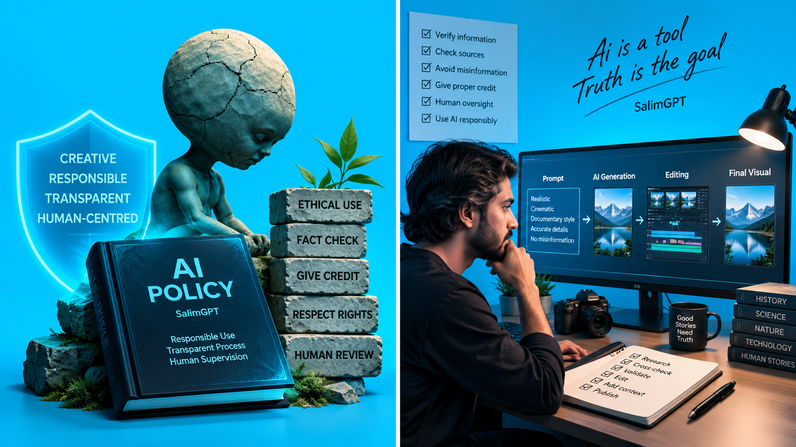

Research Assistance
Topic exploration, terminology, search direction ও research organization।
SalimGPT documentary production-এ Artificial Intelligence ব্যবহার করতে পারে research assistance, topic exploration, language support, synthetic narration, image generation, prompt development, image-to-video, generative footage, visual concept, workflow optimization এবং অন্যান্য production কাজে। তবে final factual judgement, narrative direction, visual selection, editing decision এবং publication control মানুষের অধীনে থাকে।

SalimGPT-এর production philosophy হলো technology-কে research, storytelling এবং human judgement-এর অধীনে ব্যবহার করা। কোনো AI system documentary-এর director, fact-checker বা final publisher হিসেবে independently কাজ করে না।
AI একটি শক্তিশালী production tool। এটি research দ্রুত করতে পারে, language transform করতে পারে, image বা footage generate করতে পারে, synthetic narration তৈরি করতে পারে এবং workflow-এর repetitive অংশ সহজ করতে পারে।
কিন্তু AI output সবসময় accurate, unbiased, complete বা contextually correct— এমন assumption SalimGPT করে না।
Human direction → AI assistance → human verification → final publication.সব documentary-তে একই AI tool বা একই workflow ব্যবহার করা বাধ্যতামূলক নয়। Topic ও production need অনুযায়ী ব্যবহার পরিবর্তিত হতে পারে।
Topic exploration, terminology, search direction ও research organization।
Outline, language refinement, structure analysis ও draft support।
Foreign-language source বুঝতে বা working translation তৈরিতে সহায়তা।
Final script অনুযায়ী AI-generated narration।
Historical, conceptual বা illustrative visual তৈরি।
Text-to-video অথবা image-to-video illustrative footage।
Scene, camera, motion, lighting ও visual detail নির্দেশনা।
Data organization, pattern finding ও explanatory support।
Scene breakdown, asset planning ও workflow support।
Consistency, wording, structure ও possible issue শনাক্ত করতে সহায়তা।
কোনো documentary topic-এর শুরুতে AI দিয়ে key term, historical period, possible source type, researcher, institution, archive বা related event-এর একটি working map তৈরি করা হতে পারে।
এটি research direction বুঝতে সময় বাঁচাতে পারে। কিন্তু AI-generated answer-এ hallucination, outdated fact, oversimplification অথবা fabricated citation থাকতে পারে।
তাই গুরুত্বপূর্ণ factual claim final script-এ নেওয়ার আগে available original, institutional, academic বা other reliable source দিয়ে যতটা সম্ভব independently যাচাই করার নীতি অনুসরণ করা হয়।
কোনো AI model আত্মবিশ্বাসের সঙ্গে একটি তথ্য লিখেছে—এটি সেই তথ্যের নির্ভরযোগ্যতার প্রমাণ নয়। Generative model ভুল reference, nonexistent publication বা incorrect date তৈরি করতে পারে।
তাই important factual statement-এর ক্ষেত্রে AI response থেকে original reference বা independent evidence খুঁজে নেওয়া প্রয়োজন।
তথ্য যাচাই পদ্ধতি দেখুনScript development-এর সময় AI outline testing, sentence restructuring, language refinement, translation, alternative explanation বা complex concept সহজ করার working assistance দিতে পারে।
তবে final documentary script source material, research understanding, narrative planning এবং SalimGPT-এর editorial direction অনুযায়ী review ও পুনর্গঠন করা হয়।
AI-generated wording copy করে যাচাই ছাড়া final narration হিসেবে ব্যবহার করাই SalimGPT-এর production model নয়।
SalimGPT documentary-তে synthetic বা AI-generated narration ব্যবহার করা হতে পারে। Voice generation-এর আগে final script human editorial control-এর অধীনে প্রস্তুত ও review করা হয়।
Synthetic voice ব্যবহার করলে pronunciation, sentence break, pacing, pause, emphasis এবং listening clarity পরীক্ষা করা হয়। সমস্যা থাকলে narration segment পুনরায় generate বা edit করা হতে পারে।
Voice artificial হতে পারে, কিন্তু documentary-তে বলা information, interpretation এবং narrative direction SalimGPT-এর editorial responsibility-এর অংশ।
Historical event, conceptual explanation, ancient environment অথবা এমন scene যেখানে original footage নেই— সেখানে AI-generated image বা generative footage ব্যবহার করা হতে পারে।
Scene তৈরির আগে topic research, available reference, historical context, environment, clothing, object, camera perspective, lighting এবং movement বিবেচনা করে prompt design করা হতে পারে।
AI output প্রথমবারেই final নয়। Visual inconsistency, inaccurate detail, unwanted object, unrealistic motion বা misleading context থাকলে output বাদ দেওয়া, পুনরায় generate করা বা modify করা হতে পারে।
Visual ও media source policyPrompt থেকে নতুন illustrative image।
Text instruction থেকে generative footage।
Static image থেকে motion footage।
Existing generated visual-এর refinement ও variation।
Historical বা conceptual location visualization।
Concept, layout বা explanatory graphic support।
কোনো historical ঘটনা বা environment-এর real footage না থাকলে AI-generated scene ব্যবহার করা যেতে পারে, কিন্তু scene-এর উদ্দেশ্য হওয়া উচিত explanation ও visualization।
AI-generated reconstruction যদি এমনভাবে ব্যবহার করা হয় যাতে দর্শক সেটিকে historical camera footage, genuine photograph অথবা real documentary evidence মনে করতে পারেন, তাহলে প্রয়োজনীয় contextual clarity দেওয়া গুরুত্বপূর্ণ।
অস্তিত্বহীন বা ভুল তথ্য তৈরি করতে পারে।
ভুল paper, author বা source উল্লেখ করতে পারে।
পুরোনো তথ্যকে বর্তমান হিসেবে দেখাতে পারে।
Training data-এর pattern বা bias reflect করতে পারে।
Complex historical context oversimplify করতে পারে।
Object, anatomy, text বা historical detail ভুল হতে পারে।
Generative footage-এ unrealistic movement হতে পারে।
ভুল তথ্যও খুব confident language-এ দিতে পারে।
SalimGPT-এর production workflow-এ AI যত বেশি ব্যবহৃত হোক, final documentary publish করার authority AI system-এর হাতে থাকে না।
কোন claim গ্রহণযোগ্য, কোন source যথেষ্ট credible, কোন generated image contextually appropriate, কোন footage misleading, কোন narration রাখা হবে, কোন scene বাদ যাবে এবং final edit কখন publish-ready— এসবের human review প্রয়োজন।
SalimGPT-এর overall creative, research ও editorial direction পরিচালনা করেন Mohammad Salim।
কোনো third-party copyrighted image AI tool-এ upload বা modify করা হয়েছে— শুধু এই কারণে original rights automatically বাতিল হয় না।
অন্যের image বা footage ব্যবহার করলে applicable permission, license, source condition এবং relevant rights আলাদাভাবে বিবেচনা করতে হয়।
একইভাবে AI-generated asset-এর usage right ও commercial use ব্যবহৃত service-এর terms এবং applicable law-এর ওপর নির্ভর করতে পারে।
মালিকানা ও কপিরাইট নীতিSalimGPT-এর নিজস্ব research, scene concept, prompt design, generation direction, selection, modification এবং editing-এর মাধ্যমে তৈরি AI visual ও footage SalimGPT-এর production library-এর অংশ হিসেবে সংরক্ষণ করা হতে পারে।
এসব asset documentary-এর নির্দিষ্ট narrative purpose অনুযায়ী তৈরি এবং editorially selected হতে পারে।
তবে purely AI-generated output-এর copyright status সব jurisdiction-এ একই নয়। তাই “AI দিয়ে তৈরি হয়েছে” এবং “আইনের দৃষ্টিতে একচেটিয়া copyright আছে”— এই দুটি দাবিকে SalimGPT এক জিনিস হিসেবে বিবেচনা করে না।
কোনো বাস্তব ব্যক্তিকে এমন কথা বলতে দেখানো উচিত নয় যা তিনি বলেননি।
Illustrative recreation হলে narrative context পরিষ্কার রাখা গুরুত্বপূর্ণ।
কারো identity ব্যবহার করে deceptive endorsement বা fabricated evidence তৈরি করা নয়।
Synthetic visual ব্যবহার হলে তার উদ্দেশ্য explanation, deception নয়।
Foreign-language report, article বা document বোঝার জন্য AI-assisted translation ব্যবহার করা হতে পারে।
কিন্তু legal, historical, scientific বা sensitive wording-এর ক্ষেত্রে machine translation nuance হারাতে পারে। প্রয়োজন হলে original wording, alternative translation অথবা context পুনরায় দেখা হয়।
ব্যক্তিগত বা sensitive information AI service-এ দেওয়ার আগে প্রয়োজনীয়তা ও risk বিবেচনা করা উচিত।
Restricted source material tool-এ upload করার আগে applicable rights বিবেচনা করা প্রয়োজন।
Convenience-এর জন্য unnecessary private data share না করাই ভালো practice।
SalimGPT-এর website-এ production process এবং AI policy প্রকাশ করার উদ্দেশ্য হলো দর্শককে documentary কীভাবে তৈরি হয় সে সম্পর্কে পরিষ্কার ধারণা দেওয়া।
Synthetic narration, AI-generated illustrative image বা generative footage production-এর অংশ হতে পারে। কোথায় disclosure audience understanding-এর জন্য গুরুত্বপূর্ণ, সেখানে contextual transparency বজায় রাখার নীতি অনুসরণ করা হয়।
Production need অনুযায়ী বিভিন্ন AI tool, model বা service ব্যবহার করা হতে পারে এবং সময়ের সঙ্গে tool পরিবর্তন হতে পারে।
SalimGPT নামের “GPT” অংশটি কোনো নির্দিষ্ট AI provider-এর official ownership, endorsement বা partnership নির্দেশ করে না। SalimGPT একটি স্বাধীন documentary media initiative।
Generative AI technology, platform terms, copyright practice এবং synthetic media standards দ্রুত পরিবর্তিত হচ্ছে।
তাই SalimGPT-এর AI policy প্রয়োজন অনুযায়ী নতুন technology, production experience, platform policy এবং applicable legal development-এর সঙ্গে update করা হতে পারে।
SalimGPT-এর topic selection, research direction, script review, prompt planning, AI output selection, visual editing, final factual review এবং publication-এর overall creative ও editorial control পরিচালনা করেন Mohammad Salim।
AI production-এর সক্ষমতা বাড়াতে পারে; accountability এবং final responsibility মানুষের কাছেই থাকে।
পরিচালক সম্পর্কে জানুনSalimGPT AI-কে creativity, speed, visualization এবং production efficiency বাড়ানোর একটি শক্তিশালী tool হিসেবে ব্যবহার করতে পারে।
কিন্তু final documentary-এর factual quality, visual context, ethical judgement, source responsibility এবং editorial integrity AI-এর ওপর ছেড়ে দেওয়া হয় না।
Human-led. AI-assisted. Evidence-aware. Editorially responsible.